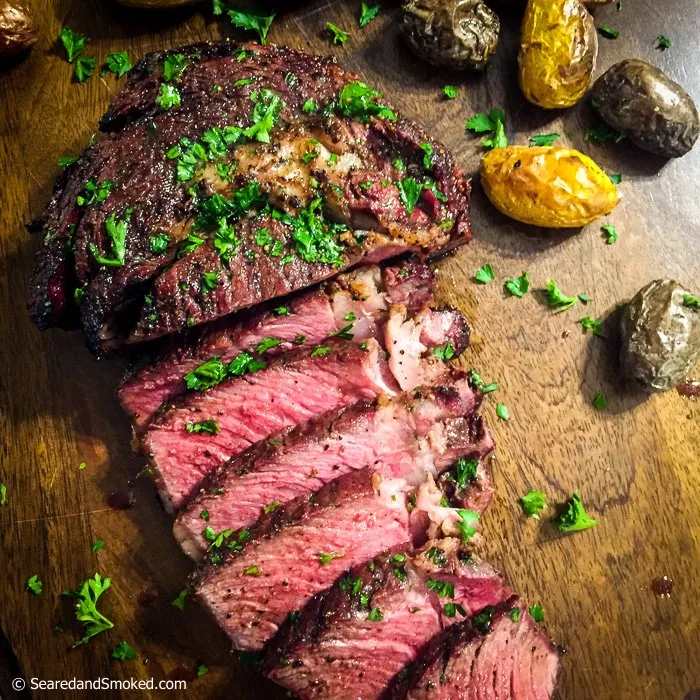

Reverse Seared Steak

Description
This reverse sear ribeye steak recipe is the culmination of years of trial, error, and experimentation. For best results use a 1" cut ribeye steak aged for 2 weeks.
Ingredients
- Ribeye Steak (1" cut, aged 14 days)
- Weber Steak 'N Chop seasoning
- Freshly ground Himalayan sea salt
- Freshly ground black pepper
- Your favorite unsalted butter or avocado oil
Steps
- Pre-heat oven to 250 degrees
- If steak has been refrigerated, set it out uncovered for 20 minutes
- Season generously with salt, pepper, and Steak N' Chop seasoning. Seriously generously. You can't overseason.
- Set steak on meat rack and place in oven
- Bake for 20 minutes
- At 5 minutes to completion begin preheating castiron skillet on high heat
- At 1 minute to completion put 2 tablespoons butter in skillet and cover
- Remove steak from oven and immediately place it in covered skillet
- Sear steak in skillet for 1 minute per side
- Let sit for 5 minutes
- Enjoy your perfectly seared medium rare ribeye